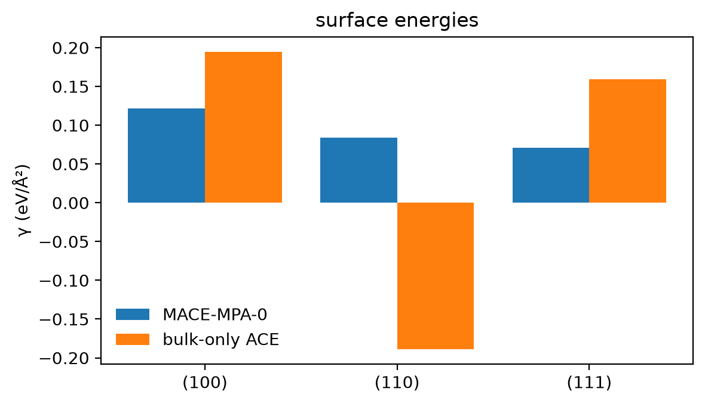
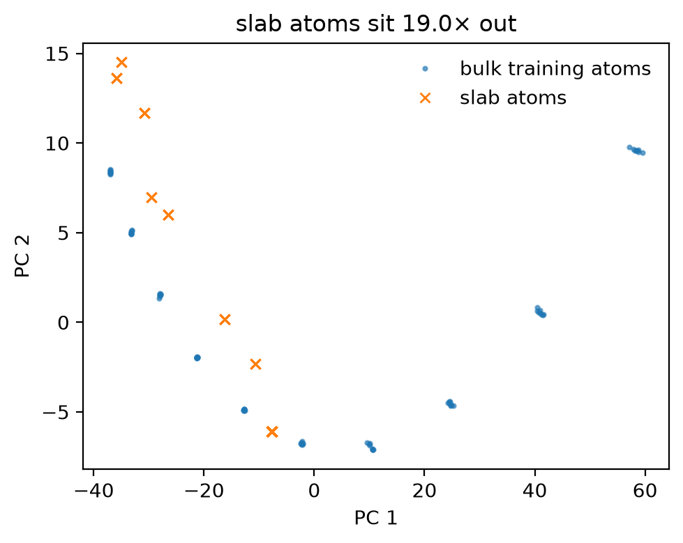

Tutorial 6: surfaces¶
Tutorial 4 ended with a question: would a bulk-only silicon model get a surface energy right? This tutorial answers it, measures why not in descriptor space, repairs the dataset, and then lets the surface atoms move, which exposes the next gap.
Goals
- Build silicon slabs for three faces and compute their surface energies with the labeller and with the bulk-only model.
- See in descriptor space how far the surface atoms sit from the data.
- Repair the dataset with a few slabs, and check the surface energies.
- Relax the slabs with the repaired model, find what still breaks, and fix that too.
It is adapted from notebook E2 of the MLIP School 2026.
Run this notebook. Install uv. Then run this command:
uvx marimo edit --sandbox https://raw.githubusercontent.com/ACEsuit/ace-jax/main/docs/user/tutorials/notebooks/school_surfaces_si.py
The notebook opens in your browser. You do not need an account. You can also open the notebook in molab, the marimo hosted service. You must sign in to run it there.
This website shows a static copy of the notebook, run on a CPU when the site was built. The interactive controls show their default values. Run time: approximately 2 minutes.
import pathlib
import time
import jax
jax.config.update("jax_enable_x64", True) # fitting needs float64
import marimo as mo
import matplotlib.pyplot as plt
import numpy as np
from ace_jax import ACECalculator
from ace_jax.tutorials import campaign as C
from ace_jax.tutorials import labels as L
from ace_jax.tutorials import structures as T
BASE = "https://raw.githubusercontent.com/ACEsuit/ace-jax/main/docs/user/tutorials/data/school/"
def shipped(rel):
"""A shipped data file: the checkout's copy when run from one, else the GitHub one."""
_p = (mo.notebook_dir() / "../data/school" / rel) if mo.notebook_dir() else None
return _p if _p is not None and _p.exists() else BASE + rel
caches = [L.LabelCache.from_file(shipped(f)) for f in ("e1/labels-mpa-0.xyz", "e2/labels-mpa-0.xyz",
"c/labels-mpa-0.xyz")]
class _Caches: # one lookup over the three shipped caches
def get(self, atoms, model):
return next((h for c in caches if (h := c.get(atoms, model)) is not None), None)
cache = _Caches()
def label(xs):
return L.label(xs, model="mpa-0", cache=cache)
work = pathlib.Path("ace_jax_tutorial_6")
work.mkdir(exist_ok=True)
Step 1: the bulk model¶
The starting point is Tutorial 4's dataset at its defaults: ten strained and rattled 8-atom diamond cells (strain range 0.08, rattle 0.02 Å), labelled by MACE-MPA-0. Fit it with the evidence fit at the size used throughout this tutorial: correlation order 3, total degree 10, cutoff 5.5 Å.
from ace_jax.basis.model import BasisSpec
from ace_jax.fit.pipeline import FitConfig, fit, load_fit_data, save_model
noise = {} # each fit's evidence noise levels (sigma_E, sigma_F), by `out`
def fit_model(train, out, degree=10):
"""The evidence fit of every step here: order 3, degree 10 (unless given), rcut 5.5, E0 fitted."""
_cfg = FitConfig(model=BasisSpec(order=3, max_degree=degree, rcut=5.5, elements=("Si",)), arm="linear",
m_per_species=0, e0="lsq", opt="lbfgs", r0=None, rungs=("map",),
predict_stats="recompute", predict_train=False,
energy_key="energy", force_key="forces", virial_key="virial").validate()
_res = fit(_cfg, load_fit_data(_cfg, train=list(train), log=lambda *a: None), log=lambda *a: None)
noise[out] = (float(np.exp(_res.theta.log_sigma_E)), float(np.exp(_res.theta.log_sigma_F)))
return str(save_model(_res, work / out, log=lambda *a: None))
bulk_training = label(T.e1_cells(0.08, 0.02))
_t = time.time()
bulk_model = fit_model(bulk_training, "fit_bulk")
mo.md(f"Fitted the bulk model on {len(bulk_training)} cells in {time.time() - _t:.0f} s.")
Fitted the bulk model on 10 cells in 16 s.
Step 2: build the slabs¶
A slab is a crystal cut on one plane, a few layers thick, with vacuum
above and below so that it does not see its own periodic image. Build the
(100), (110) and (111) faces with ase.build.surface. Two details matter:
- Vacuum. The labeller sees approximately 6 Å, and its message passing sees two times that distance. Thus the gap between a slab and its image must be a minimum of 12 Å. The vacuum slider sets the vacuum on each side.
- Which (111). Diamond has two (111) cleavage planes. The wide
"shuffle" plane breaks one bond for each surface atom. The narrow
"glide" pair breaks three. By default,
surfaceuses the glide pair.T.slabfirst moves the crystal by a quarter of the cubic diagonal, so the cut is on the shuffle plane. A surface atom with only one neighbour shows a glide cut.
The sliders move only to the settings that have labels in the tutorial.
layers = mo.ui.slider(steps=list(T.E2_LAYERS), value=6, label="layers", show_value=True)
vacuum = mo.ui.slider(steps=list(T.E2_VACUA), value=8.0, label="vacuum per side (Å)", show_value=True)
mo.hstack([layers, vacuum], justify="start")
Interactive controls in the notebook (this page shows their defaults): layers = 6, vacuum per side (Å) = 8.0
slabs = T.e2_slabs(layers.value, vacuum.value)
gap, coord = T.min_vacuum_gap(slabs), T.min_coordination(slabs)
mo.md("| face | atoms |\n|---|---|\n" + "\n".join(f"| ({s.info['miller']}) | {len(s)} |" for s in slabs)
+ f"\n\nSmallest gap between a slab and its image: **{gap:.1f} Å**; fewest neighbours of any "
f"atom: **{coord}**.")
| face | atoms |
|---|---|
| (100) | 48 |
| (110) | 48 |
| (111) | 48 |
Smallest gap between a slab and its image: 16.0 Å; fewest neighbours of any atom: 2.
Checkpoint 1 passed: a gap of at least 12 Å, and no atom with a single neighbour.
Step 3: surface energies, true and predicted¶
with \(A\) the slab's in-plane area. The bulk reference is the 8-atom cubic cell at 5.43 Å.
mo.stop(gap < 12.0 - 1e-6 or coord < 2, mo.md("Build a valid slab first (checkpoint 1)."))
ref_bulk, *labelled_slabs = label([T.c_structures()["bulk"], *slabs])
def gammas(e_bulk, e_slabs, structures=slabs):
return [T.surface_energy(e_bulk, len(ref_bulk), e, s) for s, e in zip(structures, e_slabs)]
def model_energies(model_file, xs):
_calc = ACECalculator(model_file, skin=0)
_out = []
for _a in xs:
_b = _a.copy(); _b.calc = _calc
_out.append(_b.get_potential_energy())
return _out
def model_gammas(model_file, structures=slabs):
_e = model_energies(model_file, [ref_bulk, *structures])
return gammas(_e[0], _e[1:], structures)
truth = gammas(ref_bulk.info["energy"], [a.info["energy"] for a in labelled_slabs])
gamma_bulk = model_gammas(bulk_model)
_x = np.arange(len(slabs))
_fig, _ax = plt.subplots(figsize=(6, 3.5))
_ax.bar(_x - 0.2, truth, 0.4, label="MACE-MPA-0")
_ax.bar(_x + 0.2, gamma_bulk, 0.4, label="bulk-only ACE")
_ax.set_xticks(_x, [f"({s.info['miller']})" for s in slabs]); _ax.set_ylabel("γ (eV/Ų)")
_ax.legend(frameon=False); _ax.set_title("surface energies")
_fig.tight_layout()
_fig

mo.md("| face | MACE-MPA-0 | bulk-only ACE | error |\n|---|---|---|---|\n"
+ "\n".join(f"| ({s.info['miller']}) | {t:.4f} | {g:.4f} | {g - t:+.4f} |"
for s, t, g in zip(slabs, truth, gamma_bulk))
+ "\n\nγ in eV/Ų. The bulk-only model is wrong by several times the surface energy itself.")
| face | MACE-MPA-0 | bulk-only ACE | error |
|---|---|---|---|
| (100) | 0.1220 | 0.1949 | +0.0730 |
| (110) | 0.0838 | -0.1887 | -0.2725 |
| (111) | 0.0712 | 0.1593 | +0.0881 |
γ in eV/Ų. The bulk-only model is wrong by several times the surface energy itself.
Step 4: how far outside the data?¶
Describe every atom by its ACE descriptor in a fixed reference basis (order 3, degree 10: 120 numbers per atom), and compare the slab atoms with the bulk training atoms. A principal-component plot shows the gap. One number measures it:
- the median distance from a slab atom to its nearest training atom,
- divided by the typical spacing of the training atoms (the median distance from each training atom to its nearest neighbour).
_B = C.reference_basis()
Xb = np.concatenate(C.atom_descriptors(bulk_training, _B))
Xs = np.concatenate(C.atom_descriptors(slabs, _B))
novelty = C.nn_ratio(Xb, Xs)
_mu = Xb.mean(0)
_, _, _Vt = np.linalg.svd(Xb - _mu, full_matrices=False)
_pb, _ps = (Xb - _mu) @ _Vt[:2].T, (Xs - _mu) @ _Vt[:2].T
_fig, _ax = plt.subplots(figsize=(5, 4))
_ax.plot(_pb[:, 0], _pb[:, 1], ".", ms=4, alpha=0.6, label="bulk training atoms")
_ax.plot(_ps[:, 0], _ps[:, 1], "x", ms=5, label="slab atoms")
_ax.set_xlabel("PC 1"); _ax.set_ylabel("PC 2"); _ax.legend(frameon=False)
_ax.set_title(f"slab atoms sit {novelty:.1f}× out")
_fig.tight_layout()
_fig

Checkpoint 2 passed: the median slab atom is 19.0 training spacings from the nearest training atom: the model is extrapolating, which is why its surface energies are wrong.
Step 5: repair the dataset¶
Add slabs of the same three faces to the training set. Use a thickness that the test slabs do not have: 4 layers, or 6 if the test slabs have 4. Thus the test slabs stay out of the training set. This adds three structures and three labels.
repair = label(T.e2_slabs(T.e2_repair_layers(layers.value), vacuum.value))
from ace_jax.tutorials.labels import structure_key
assert not ({structure_key(a) for a in repair} & {structure_key(s) for s in slabs}), "a test slab is in training"
repaired_model = fit_model([*bulk_training, *repair], "fit_repaired")
gamma_repaired = model_gammas(repaired_model)
repaired_errors = [abs(g - t) for g, t in zip(gamma_repaired, truth)]
mo.md("| face | bulk-only error | repaired error |\n|---|---|---|\n"
+ "\n".join(f"| ({s.info['miller']}) | {abs(g - t):.4f} | {e:.5f} |"
for s, g, t, e in zip(slabs, gamma_bulk, truth, repaired_errors))
+ "\n\n|γ error| in eV/Ų.")
| face | bulk-only error | repaired error |
|---|---|---|
| (100) | 0.0730 | 0.00010 |
| (110) | 0.2725 | 0.00007 |
| (111) | 0.0881 | 0.00006 |
|γ error| in eV/Ų.
Checkpoint 3 passed: three slabs bring every surface energy to within 0.00010 eV/Ų of the labeller, from 0.27.
Step 6: let the atoms move¶
The surface energies above are for ideal cleaves, frozen in place. A real surface relaxes. Relax each test slab with the repaired model (BFGS, until every force is below 0.03 eV/Å, at most 200 steps) and look at what happens.
from ase.optimize import BFGS
def relax(model_file, structures):
"""BFGS to fmax 0.03 eV/A (at most 200 steps); per slab: converged, energy change, final
largest force, and the relaxed copy."""
_out = []
for _s in structures:
_a = _s.copy(); _a.calc = ACECalculator(model_file, skin=0)
_e0 = _a.get_potential_energy()
_conv = BFGS(_a, logfile=None).run(fmax=0.03, steps=200)
_out.append(dict(converged=bool(_conv), dE=_a.get_potential_energy() - _e0,
fmax=float(np.abs(_a.get_forces()).max()), atoms=_a,
moved=float(np.linalg.norm(_a.positions - _s.positions, axis=1).max())))
return _out
def relax_table(results, gamma=None, truth=None):
"""The relaxations, and with gamma/truth the relaxed surface energies against the labeller's."""
_t = ("| face | converged | energy change (eV) | largest force (eV/Å) |\n|---|---|---|---|\n"
+ "\n".join(f"| ({s.info['miller']}) | {r['converged']} | {r['dE']:+.2f} | {r['fmax']:.3f} |"
for s, r in zip(slabs, results)))
if gamma is not None:
_t += ("\n\n| face | relaxed γ, ACE | relaxed γ, MACE-MPA-0 | error |\n|---|---|---|---|\n"
+ "\n".join(f"| ({s.info['miller']}) | {a:.4f} | {b:.4f} | {abs(a - b):.4f} |"
for s, a, b in zip(slabs, gamma, truth)))
return _t
from ace_jax.fit.xyz import read_extxyz
from ace_jax.tutorials.labels import structure_key as _key
# the labeller's own relaxations of the same slabs, same protocol (shipped)
_truth_E = {str(f.info["from_key"]): float(f.info["energy"])
for f in read_extxyz(str(L.fetch(shipped("e2/relaxed-mpa-0.xyz"))))}
gamma_relaxed_truth = gammas(ref_bulk.info["energy"], [_truth_E[_key(s)] for s in slabs])
relaxed_repaired = relax(repaired_model, slabs)
_eb = model_energies(repaired_model, [ref_bulk])[0]
gamma_relaxed_repaired = gammas(_eb, [r["atoms"].get_potential_energy() for r in relaxed_repaired])
relaxed_repaired_errors = [abs(a - b) for a, b in zip(gamma_relaxed_repaired, gamma_relaxed_truth)]
mo.md(relax_table(relaxed_repaired, gamma_relaxed_repaired, gamma_relaxed_truth))
| face | converged | energy change (eV) | largest force (eV/Å) |
|---|---|---|---|
| (100) | True | -0.10 | 0.023 |
| (110) | True | -0.11 | 0.018 |
| (111) | True | -0.10 | 0.014 |
| face | relaxed γ, ACE | relaxed γ, MACE-MPA-0 | error |
|---|---|---|---|
| (100) | 0.1204 | 0.1200 | 0.0003 |
| (110) | 0.0825 | 0.0826 | 0.0002 |
| (111) | 0.0702 | 0.0704 | 0.0002 |
The repaired model relaxes all three slabs, releasing 0.10 to 0.11 eV, and its relaxed surface energies agree with the labeller's own relaxations to 0.0003 eV/Ų, with atoms moving up to 0.24 Šfrom the ideal cleave.
Step 7: displaced slabs, and a basis to hold them¶
A relaxation follows one downhill path. Molecular dynamics at a finite temperature moves the surface atoms in all directions. The repair slabs have zero forces because of their symmetry. Thus they give no data about the forces away from the ideal cleave. Teach the model what a surface does when its atoms move: two rattled copies of each repair slab (0.05 and 0.12 Å), six more labels. Refit with the same basis, relax again, and compare the relaxed surface energies with the labeller's relaxations, as in Step 6.
def relaxed_gammas(model_file):
"""Relax the test slabs with a model; the relaxations, their surface energies and errors."""
_rel = relax(model_file, slabs)
_eb = model_energies(model_file, [ref_bulk])[0]
_g = gammas(_eb, [r["atoms"].get_potential_energy() for r in _rel])
return _rel, _g, [abs(a - b) for a, b in zip(_g, gamma_relaxed_truth)]
displaced = label(T.e2_displaced(repair))
displaced_model = fit_model([*bulk_training, *repair, *displaced], "fit_displaced")
_rel, _g, displaced_errors = relaxed_gammas(displaced_model)
mo.md(relax_table(_rel, _g, gamma_relaxed_truth))
| face | converged | energy change (eV) | largest force (eV/Å) |
|---|---|---|---|
| (100) | True | -0.12 | 0.018 |
| (110) | True | -0.09 | 0.021 |
| (111) | True | -0.08 | 0.029 |
| face | relaxed γ, ACE | relaxed γ, MACE-MPA-0 | error |
|---|---|---|---|
| (100) | 0.0982 | 0.1200 | 0.0219 |
| (110) | 0.0740 | 0.0826 | 0.0087 |
| (111) | 0.0731 | 0.0704 | 0.0027 |
Worse, not better: the relaxed surface energies are now off by up to 0.0219 eV/Ų, against 0.0003 before. The evidence fit has one noise level per quantity, for all the data. A degree-10 basis cannot fit the 0.12 Å slabs, so the evidence explains their misfit as noise: the energy noise level rises from 1.3 to 88 meV and the force noise from 1.7 to 55 meV/Å. That loosens the fit everywhere, the ideal surfaces included.
The data now hold more than the basis can describe. Tutorial 5's lesson runs the other way here: a basis must grow with the data it is asked to fit. Refit the same 19 structures (10 bulk cells, 3 repair slabs, 6 displaced) at total degree 12, and relax once more.
stable_model = fit_model([*bulk_training, *repair, *displaced], "fit_displaced_d12", degree=12)
relaxed_stable, _g, relaxed_errors = relaxed_gammas(stable_model)
mo.md(relax_table(relaxed_stable, _g, gamma_relaxed_truth))
| face | converged | energy change (eV) | largest force (eV/Å) |
|---|---|---|---|
| (100) | True | -0.13 | 0.026 |
| (110) | True | -0.10 | 0.024 |
| (111) | True | -0.08 | 0.029 |
| face | relaxed γ, ACE | relaxed γ, MACE-MPA-0 | error |
|---|---|---|---|
| (100) | 0.1193 | 0.1200 | 0.0008 |
| (110) | 0.0830 | 0.0826 | 0.0003 |
| (111) | 0.0701 | 0.0704 | 0.0003 |
Checkpoint 4 passed: at degree 12 every relaxation converges gently, and the relaxed surface energies agree with the labeller's own relaxed values to 0.0008 eV/Ų, with displaced slabs in the data.
Reflection¶
Nine structures and a larger basis turned a model that could not see a surface into one that relaxes three of them correctly, trained on displaced surfaces as well as ideal ones. Would this model now predict the Si(100) surface you would see in an experiment? What is still missing from the data? Think before you open the answer.
A model answer
No. Real silicon surfaces reconstruct: (100) forms rows of dimers (2×1, and c(4×2) at low temperature) and (111) the 7×7 reconstruction, with adatoms and stacking faults. None of those bonding environments is in the data, and the surfaces here were relaxed only locally from the ideal cleave, at zero temperature. Steps, vacancies, adatoms and finite-temperature motion are missing too. Each new environment is another coverage gap: finding them one at a time by hand does not scale, which is what Tutorial 7 automates.
Exercises¶
- Thickness. Change the layers to 4 and to 12. Do the bulk-only errors and the novelty ratio change? (The repair slabs switch to 6 layers when the test slabs are 4.)
- Vacuum. Set the vacuum to 4 Å per side. Which check fails, and why would a too-small gap make the labeller's surface energy wrong?
- Fewer repairs. Repair with the (111) slab only (
repair[2:]). Which surface energies come back, and which do not? - The glide cut. Build a glide-plane (111) slab with
ase.build.surface(bulk("Si", "diamond", a=5.43, cubic=True), (1, 1, 1), 6, vacuum=8.0)and count its atoms' neighbours withT.min_coordination.
Summary¶
- A bulk-only model extrapolates on surfaces, and a descriptor-space distance shows it before any label is spent on the test.
- A few targeted structures repair a property.
- The evidence fit sets one noise level for all the data: structures the basis cannot describe loosen the fit everywhere. Grow the basis with the data.
- Train on what the simulation will do: displaced, relaxed and moving configurations, not only the ideal one.
Next: Tutorial 7 lets molecular dynamics and a selection rule find the missing structures.